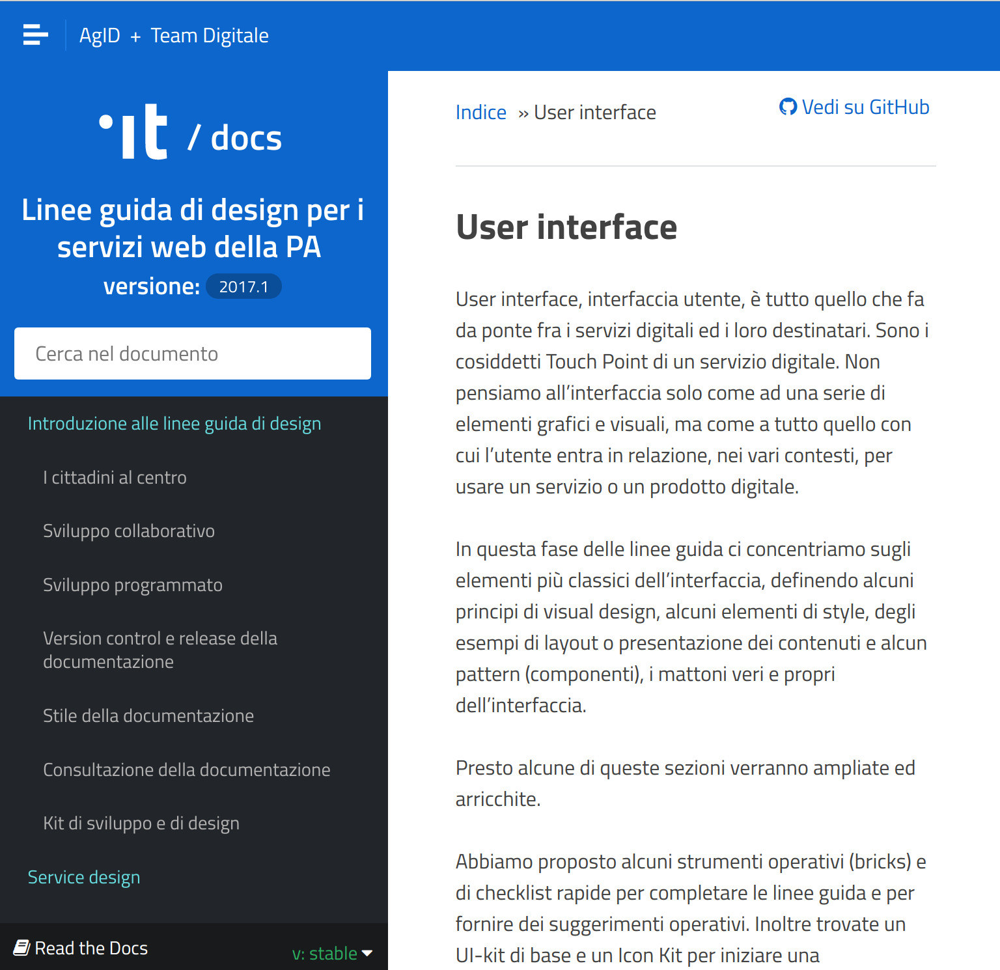
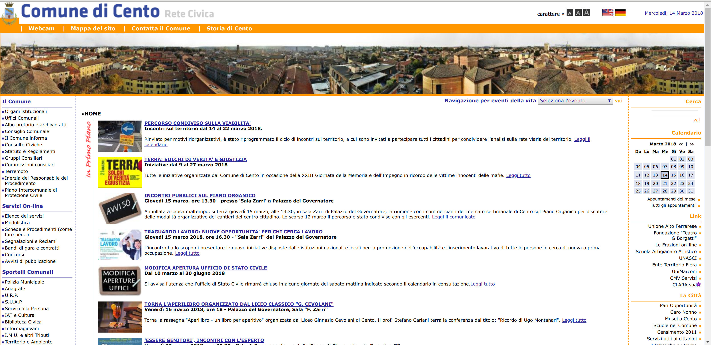
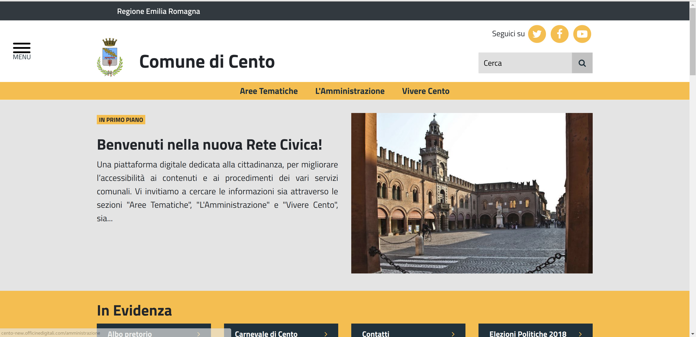
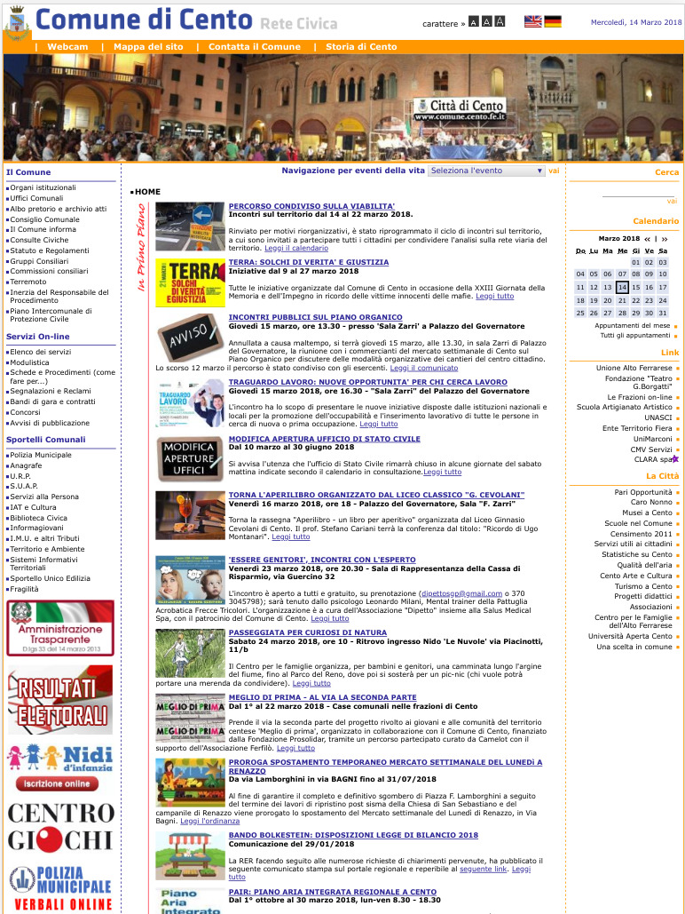
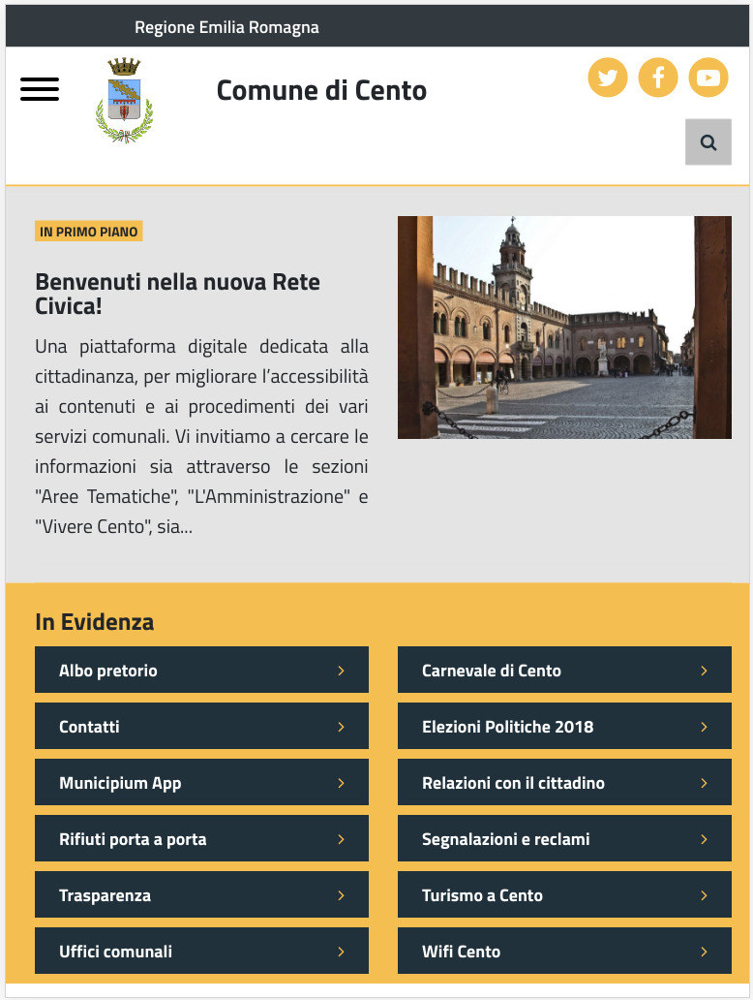
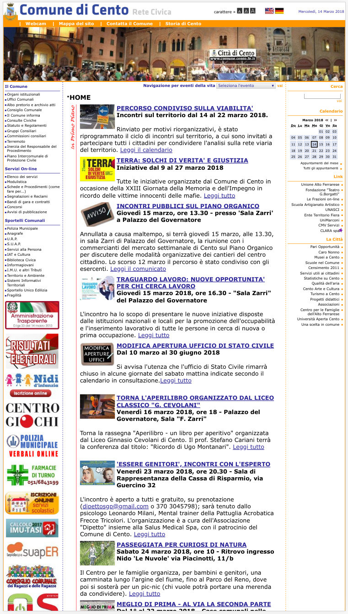

Nuova Rete Civica
Comune di Cento - 15 Marzo 2018
Matteo Fortini
Un sito informativo e di servizio
Attività durata circa 2 anni.
- Contenuti riprogettati e ricorrelati
- Grazie al lavoro di Servizio Sistemi Informativi + Gruppo Comunicazione
- Partner tecnico: Officine Digitali
- Con la collaborazione degli Uffici
- Occasione per alternanza scuola-lavoro (~10 in 2 anni)
Sito in linea con le raccomandazioni AgID

Sito dinamico e responsive

Sito dinamico e responsive

Sito dinamico e responsive
Viene privilegiato l'accesso da dispositivi mobili.


Sito dinamico e responsive
Viene privilegiato l'accesso da dispositivi mobili.

Nuova homepage
- Notizie in primo piano
- Link in evidenza
- News ed eventi
- Galleria
- Link per feedback e contatti
Tre sezioni principali
- Aree Tematiche: rappresentano il punto di vista dell'utente
- L'Amministrazione: rappresenta uffici e servizi interni al Comune
- Vivere Cento: rappresenta uffici e servizi pubblici esterni al Comune
Nuova sezione news/eventi
- Miglioramento dell'aspetto grafico
- Categorizzazione per area tematica
- Possibilità di filtrare per categoria
Nuovi strumenti tecnici
- Casella di ricerca
- Breadcrumbs
- Burger menu
- Pulsanti di condivisione social
- Feed RSS per news ed eventi
- Feed RSS per Albo Pretorio
- Utilizzo di OpenStreetMap
- PDF compilabili
Aggiornato dinamicamente
Il contenuto verrà aggiornato e riorganizzato in base a
- Modifiche dei servizi e degli uffici
- Statistiche di utilizzo
- Feedback degli utenti